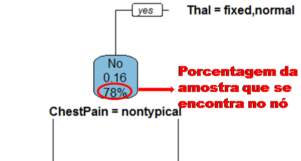
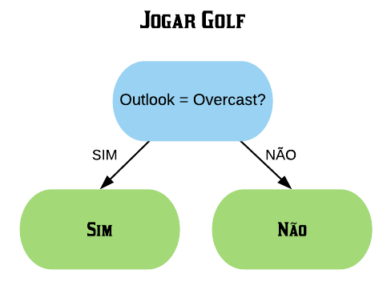
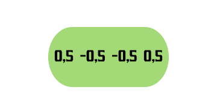

Neste capítulo será estudado de forma mais aprofundada modelos de treinamento baseados em árvores, os quais são simples para interpretação, como: árvores de decisão e regressão, florestas aleatórias, adaboost, entre outros. O objetivo é entender o funcionamento dos mesmos, assim como os critérios que utilizam para classificarem as amostras.
É importante deixar claro que para utilizarmos esses métodos podemos usar tanto dados numéricos quanto categóricos. Além disso, não é necessário padronizar os dados.
10.1 Árvores de Decisão
Uma árvore de decisão, em geral, pergunta uma questão e classifica o elemento baseado na resposta. Ela utiliza os dados de cada indivíduo para criar uma regra de separação, que posteriormente será utilizada para rotular novas amostras.
As árvores de decisão podem ser aplicadas aos problemas de regressão e classificação. Primeiro vamos considerar os problemas de classificação, e depois passamos para a regressão.
10.2 em Classificação
Vejamos a seguir um exemplo de árvore de decisão para um problema de classificação.
Nomenclatura:
Nó Raiz ou Raiz: é a variável que se encontra no topo da árvore;
Nós Internos ou Nós: são as variáveis intermediárias, que possuem tanto setas apontandas para elas como saindo delas;
Nós Folhas ou Nós Terminais ou Folhas: possuem apenas setas apontadas para elas. Representam a decisão final da árvore.
No processo de construção de uma árvore de decisão é importante ressaltar que a separação dos dados deve envolver apenas duas respostas: “Sim” ou “Não”. Também é preciso definir a ordem das variáveis, como a variável com que se deve começar, qual deve ser a seguinte, e assim por diante. A solução para isso é obtida através do nível de impureza das variáveis.
Dizemos que uma variável é impura quando ela não consegue separar bem os dados em uma árvore de decisão. Para calcularmos a impureza de uma variável utilizamos o indíce Gini, que varia entre 0 (mais puro possível) e 0,5 (mais impuro possível). Primeiramente calculamos o índice Gini para cada nó da variável, e em seguida obtemos o índice Gini da variável como uma média ponderada. O índice Gini de um nó é obtido por:
Gini(nó) = 1 - \(p_{S}^2\) - \(p_{N}^2\), onde \(p_{S^2}\) é a proporção de “sim” da resposta da variável de interesse e\(p_{N}\) a proporção de “não” da resposta da variável de interesse.
O índice Gini da variável é dado pela média do índice Gini para os nós referentes às respostas “Sim” e “Não” ponderada pela proporção dos elementos em cada nó.
Sex ChestPain Thal HeartDisease
1 1 typical fixed No
2 0 nontypical normal No
3 1 nontypical normal No
4 0 nontypical normal No
5 1 nontypical reversable No
6 1 nontypical reversable Yes
Nosso objetivo é prever se um indivíduo tem ou não uma doença cardíaca (variável “HeartDisease”), baseado nas outras variáveis. As variáveis explicativas são as seguintes:
Sex: indica o sexo do indivíduo, onde “M” = Masculino e “F” = Feminino;
ChestPain: referente ao indivíduo sentir dor no peito, onde “typical” = típico e “nontypical” = não típico;
Thal: indica se o indivíduo possui Talassemia, onde “normal” = não possui, “fixed” = talassemia irreversível e “reversable” = talassemia reversível.
Vamos verificar o quão bem as variáveis isoladamente são capazes de prever se o paciente possui ou não doença cardíaca. Vamos começar pela variável “Sex”.
summary(base$Sex)
Min. 1st Qu. Median Mean 3rd Qu. Max.
0.0000 0.0000 1.0000 0.6944 1.0000 1.0000
Note que temos 22 indivíduos do sexo feminino e 50 indivíduos do sexo masculino. Como a resposta de um nó da árvore deve ser “Sim” ou “Não”, vamos utilizar a variável “Sex=M”.
library(dplyr)
# Verificando quantos indivíduos possuem doença cardíaca de acordo com o sexo:base %>%group_by(Sex, HeartDisease) %>%summarise(N=n())
# A tibble: 4 × 3
# Groups: Sex [2]
Sex HeartDisease N
<int> <chr> <int>
1 0 No 20
2 0 Yes 2
3 1 No 36
4 1 Yes 14
Então a variável “Sex=M” separa os pacientes da seguinte forma:
Note que a maioria dos pacientes com doença cardíaca terminaram na folha referente ao sexo masculino, mas a maioria dos que não possuem doença também. Já podemos ter uma ideia que essa variável não é tão boa em separar os dados, mas para averiguarmos essa hipótese vamos calcular o índice gini dela.
Primeiramente vamos calcular o índice Gini do nó “Sex = M Sim”:
O índice Gini da variável “Sex = M” é dado pela média do índice Gini dos nós referentes às respostas “Sim” e “Não” ponderada pela frequência dos indivíduos em cada nó.
Como o índice Gini da variável “Sex = M” ficou mais próximo de 0,5 do que de 0, podemos constatar que ela é uma variável com baixa pureza. Note que se tivéssemos escolhido a variável “Sex = F” o índice Gini obtido seria o mesmo, pois “Sex = F Sim” é equivalente a “Sex = M Não” e “Sex = F Não” é equivalente a “Sex = M Sim”. ou seja, as contas seriam as mesmas.
Agora vamos realizar o mesmo processo para a variável “ChestPain”, ou seja, vamos verificar o quão bem ela é capaz de prever se o paciente possui doença cardíaca.
base %>%group_by(ChestPain) %>%summarise(N=n())
# A tibble: 2 × 2
ChestPain N
<chr> <int>
1 nontypical 49
2 typical 23
Note que temos 23 indivíduos que sentem dor no peito tipicamente e 49 indivíduos que não sentem tipicamente. Vamos verificar quantos deles possuem doença cardíaca:
base %>%group_by(ChestPain, HeartDisease) %>%summarise(N=n())
# A tibble: 4 × 3
# Groups: ChestPain [2]
ChestPain HeartDisease N
<chr> <chr> <int>
1 nontypical No 40
2 nontypical Yes 9
3 typical No 16
4 typical Yes 7
Vamos considerar a variável “ChestPain = Typical”. Ela separa os dados da seguinte forma:
Note que quase metade dos pacientes que possuem dor no peito têm doença cardíaca. Dos que não sentem a dor no peito, quase \(\frac{1}{4}\) apenas possui a doença.
Vamos calcular o índice Gini do nó “ChestPain = Typical Sim”:
O índice Gini da variável “ChestPain = Typical” é dado pela média do índice Gini dos nós referentes às respostas “Sim” e “Não” ponderada pela frequência dos indivíduos em cada nó.
Note que ela obteve um índice Gini um pouco maior do que a variável “Sex = M”. Isso indica que a variável “Sex = M” é mais pura do que a variável “ChestPain = Typical”.
Agora falta apenas obter o índice Gini da variável “Thal”. Mas diferentemente das outras 2 ela não possui apenas 2 níveis, e sim 3: “normal”, “fixed” e “reversable”.
base %>%group_by(Thal) %>%summarise(N=n())
# A tibble: 3 × 2
Thal N
<chr> <int>
1 fixed 4
2 normal 52
3 reversable 16
Nesse caso vamos ter que calcular o índice Gini para todas as combinações possíveis: “Thal = normal”, “Thal = fixed”, “Thal = reversable”, “Thal = normal ou fixed”, “Thal = normal ou reversable”, “Thal = fixed ou reversable”. Porém note que o índice Gini da variável “Thal = normal” é equivalente ao da variável “Thal = fixed ou reversable”, pois “Thal = normal Sim” é o mesmo que “Thal = fixed ou reversable Não”. Da mesma forma isso vale para as variáveis “Thal = fixed” e “Thal = normal ou reversable”, e “Thal = reversable” e “Thal = normal ou fixed”. Com isso conseguimos economizar algumas contas.
base %>%group_by(Thal, HeartDisease) %>%summarise(N=n())
# A tibble: 6 × 3
# Groups: Thal [3]
Thal HeartDisease N
<chr> <chr> <int>
1 fixed No 3
2 fixed Yes 1
3 normal No 44
4 normal Yes 8
5 reversable No 9
6 reversable Yes 7
Vamos, primeiramente, olhar para a variável “Thal = normal”. Ela separa os dados da seguinte forma:
Note que a maioria dos pacientes que possuem doença cardíaca estão no grupo dos que possuem “Thal = normal”.
Vamos calcular o índice Gini do nó “Thal = Normal Sim”:
\(Gini(Thal = Normal Sim)\) = 1 -\(\left(\frac{8}{52}\right)^2\) -\(\left(\frac{44}{52}\right)^2\) =\(0,260\)
Agora vamos calcular o índice Gini do nó “Thal = Normal Não”:
\(Gini(Thal = Normal Não)\) = 1 -\(\left(\frac{8}{20}\right)^2\) -\(\left(\frac{12}{20}\right)^2\) =\(0,480\)
Então o índice Gini da variável “Thal = Normal” fica da seguinte forma:
Resumindo, os índices Ginis de todas as variáveis são:
Variáveis
Índice Gini
Sex = M
0,331
ChestPain = Typical
0,339
Thal = Normal
0,321
Thal = Fixed
0,346
Thal = Reversable
0,319
A variável “Thal = Reversable” é a que possui o menor índice Gini, portanto ela é a mais pura. Ela ficará no topo da árvore de decisão, ou seja, será o nó raiz.
O próximo passo é definir as variáveis que ficarão no nó “Thal = Reversable Sim” e “Thal = Reversable Não”. Para isso temos que olhar para a base de dados com os indivíduos do grupo “Thal = Reversable Sim” e “Thal = Reversable Não”, respectivamente.
# Grupo de indivíduos "Thal = Reversable Sim":base1 = base %>%filter(Thal =="reversable")head(base1)
Sex ChestPain Thal HeartDisease
1 1 nontypical reversable No
2 1 nontypical reversable Yes
3 1 typical reversable No
4 1 nontypical reversable No
5 1 nontypical reversable Yes
6 1 typical reversable Yes
Agora temos que calcular o índice Gini para todas as variáveis referentes a esse grupo. A que for mais pura entrará no nó “Thal = Reversable Sim”. Poupando os cálculos, vamos obter que o menor índice Gini é o da variável “ChestPain = Typical”.
# Grupo de indivíduos "Thal = Reversable Não":base2 = base %>%filter(Thal !="reversable")head(base2)
Sex ChestPain Thal HeartDisease
1 1 typical fixed No
2 0 nontypical normal No
3 1 nontypical normal No
4 0 nontypical normal No
5 1 nontypical normal No
6 1 typical normal No
Agora calculamos também o índice Gini para todas as variáveis referentes a esse grupo. Após os cálculos necessários veremos que o menor índice Gini é o da variável “ChestPain = Nontypical”.
Dessa forma, podemos dar continuidade a nossa árvore.
Após obtidos esses novos nós, o processo continua se repetindo, obtendo novos nós e/ou folhas para a árvore, até a construção chegar ao fim.
Pergunta: quando o processo de construção de uma árvore chega ao fim? O processo de construção pode terminar por 3 fatores:
Quando a pureza do nó é maior do que o de qualquer variável que adicionamos;
Quando atingimos folhas 100% puras (índice Gini = 0);
Quando o ganho ao aumentar a árvore é muito pequeno.
O ganho ao aumentar a árvore pode ser resumido como um conjunto de atributos presentes na árvore que retornem o maior ganho de informações. Essa questão será melhor abordada posteriormente, juntamente com a questão de como podar as árvores (que está intimamente relacionada ao ganho) no subcapítulo XGBoost.
10.3 Em Regressão
Agora iremos discutir o processo de construção de uma árvore de regressão. Em uma árvore de regressão, diferentemente de uma árvore para classificação, cada folha possui um valor numérico (ao invés de categorias como “Sim” ou “Não”, como no exemplo anterior da base SmallHeart). Vejamos a seguir um exemplo de árvore de decisão para um problema de regressão.
Esse valor numérico presente nas folhas não é nada menos que a média do valor da variável de interesse a ser prevista para os elementos que satisfazem a condição do nó. Por exemplo, na árvore de regressão acima a primeira folha dá como resultado uma eficácia de 5%: essa foi a média observada da eficácia do medicamento em pacientes com mais de 50 anos de idade. Para a segunda folha, a com eficácia de 20%: esse valor é a média da eficácia do medicamento em um indivíduo com menos de 50 anos de idade e que toma uma dosagem maior do que 29mg foi de 20%. O processo é o mesmo para as outras folhas.
A grande pergunta é qual valor colocar no nó como condição. Para exemplificar como funciona o processo, vamos começar com um exemplo simples:
Ex.: Vamos carregar o banco de dados “SmallAdvertising”. Este banco possui informações sobre as vendas de um produto em 10 mercados diferentes (variável sales), além de orçamentos de publicidade para esse produto em cada um dos mercados para três mídias diferentes: TV, rádio e jornal (variáveis TV, radio e newspaper, respectivamente).
Vamos considerar o caso em que queremos construir uma árvore de regressão para prever as vendas baseados apenas na variável TV.
plot(vendas$TV, vendas$sales, pch =19,xlab ="Orçamento de Publicidade do Produto para a TV",ylab ="Vendas do Produto",main ="Vendas do produto x Publicidade para a TV")
Primeiramente é preciso definir qual valor irá entrar como condição no primeiro nó. O algoritmo realiza isso testando todos os possíveis valores de separação para os dados, e pega o que minimiza a soma dos quadrados dos resíduos. Inicialmente, como o primeiro separador, ele considera a média dos 2 menores valores da Publicidade.
ordenados =sort(vendas$TV)mean(ordenados[1:2])
[1] 44.95
Então 44,95 é o primeiro valor a ser testado para a separação dos dados.
plot(vendas$TV, vendas$sales, pch =19,xlab ="Orçamento de Publicidade do Produto para a TV",ylab ="Vendas do Produto",main ="Vendas do produto x Publicidade para a TV"); abline(v =44.95,col ="red")
Assim, o primeiro nó será da seguinte forma:
Para a resposta “sim” prevemos que as vendas do produto será de 9,2, o qual é o resultado da média dos valores das vendas para todos os produtos cuja publicidade foi menor do que 44,95 (ou seja, é apenas o valor do primeiro elemento). Para a resposta “Não”, então a folha seguinte contém o resultado da média dos valores das vendas para todos os produtos cuja publicidade foi maior do que 44,95, o qual é de 15,05.
Note que fazendo isso teremos resíduos (diferença do valor original e do valor predito pela árvore) muito grandes. O algoritmo eleva esses resíduos ao quadrado e os soma. Esse valor é a soma dos quadrados dos resíduos considerando o nó “Publicidade para a TV < 44,95?”.
Em seguida ele irá para o próximo separador: a média do segundo e do terceiro menores pontos.
mean(ordenados[2:3])
[1] 66.95
Então 66,95 é o segundo valor a ser testado para a separação dos dados.
plot(vendas$TV, vendas$sales, pch =19,xlab ="Orçamento de Publicidade do Produto para a TV",ylab ="Vendas do Produto",main ="Vendas do produto x Publicidade para a TV"); abline(v =66.95,col ="red")
Então o nó considerado será da forma “Publicidade para a TV < 66,95?”.
O valor de 8,9 corresponde ao resultado da média dos valores das vendas para todos os produtos cuja publicidade foi menor do que 66,95. Então a árvore prevê esse valor de vendas para o produto que obteve uma publicidade para a TV < 66,95. O valor de 15,77 é o resultado da média dos valores das vendas para todos os produtos cuja publicidade foi maior do que 66,95. Novamente serão obtidos os resíduos dessa predição e eles serão somados.
Então o algoritmo irá para o próximo separador e irá calcular a soma dos quadrados dos resíduos da predição. Isso ocorre sucessivamente até acabarem todos os separadores possíveis para a árvore. O separador vencedor (aquele que irá para o nó raiz) é aquele com a menor soma dos quadrados dos resíduos.
A construção dos próximos nós se dá pela mesma forma que a do nó raiz. O processo de construção da árvore termina quando:
Atingimos um número mínimo de observações em uma folha (usualmente é utilizado 20 observações). Não continuamos a divisão após esse número mínimo pois corremos o risco de criar uma árvore sobreajustada à amostra dada;
Quando o ganho ao aumentar a árvore é muito pequeno.
Agora vamos para o caso em que tenhamos mais de uma variável preditiva nos dados. Vamos considerar agora que queremos prever as vendas do produto baseado em seus orçamentos de publicidade para TV, rádio e jornal.
Assim como anteriormente, começamos usando o orçamento para a TV para prever as vendas, e pegamos o separador com a menor soma dos quadrados dos resíduos. O melhor separador se torna um candidato para a raiz da árvore. Em seguida, focamos em utilizar o orçamento para o rádio para prever as vendas. Assim como com o orçamento para a TV, tentamos diferentes separadores para a predição e calculamos a soma dos quadrados dos resíduos em cada passo. O melhor separador se torna outro candidato para a raiz. Por último, utilizamos o orçamento para o jornal para prever as vendas, e após tentarmos diferentes separadores pegamos aquele com a menor soma dos quadrados dos resíduos também. Então comparamos a soma dos quadrados dos resíduos de todos os candidatos para a raiz, e o escolhido, novamente, é aquele com a menor soma.
Para os próximos nós o processo de construção também é equivalente ao anterior, exceto que agora nós comparamos a menor soma dos quadrados dos resíduos de cada preditor. E, novamente, quando uma folha atinge um número mínimo de observações, a árvore é finalizada.
10.3.1 Construindo árvores com o rpart e rpart.plot
Vamos construir árvores com o comando rpart(). Como argumento da função nós passamos:
A variável de interesse a ser prevista em função das variáveis preditoras;
A base de dados onde as variáveis se encontram.
Vamos utilizar a base de dados referentes ao primeiro exemplo dado de construção de uma árvore, onde queríamos prever se um indivíduo possui doença cardíaca baseado em características dele.
library(rpart)heart_arvore =rpart(HeartDisease~., data = base)
Agora vamos plotar a árvore com o comando rpart.plot().
library(rpart.plot)rpart.plot(heart_arvore)
Observe que a árvore ficou “vazia”. O que ela quer dizer com isso é: assuma “Não” sempre para o indivíduo possuir doença cardíaca, e acerte com precisão de 78%. Isso ocorre devido aos valores iniciais do comando rpart.control(), que ajusta os parâmetros da função rpart(). Os principais parâmetros do rpart.control são:
minsplit: o número mínimo de observações que devem existir em um nó para que uma divisão seja tentada. Padrão: minsplit = 20;
minbucket: o número mínimo de observações em qualquer folha. Padrão: minbucket = minsplit/3;
cp (complexity parameter): o mínimo de ganho de ajuste que devemos ter em cada divisão. O principal papel desse parâmetro é economizar tempo de computação removendo as divisões que não valem a pena. Padrão: cp = 0,01;
maxdepth: profundidade máxima da árvore (a profundidade da raiz é zero). Não pode ser maior que 30.
Ex. 1: Vamos ajustar os parâmetros da árvore e construí-la novamente. Vamos determinar que a profundidade da árvore seja 2, que 0 seja o número mínimo de observações em um nó e que ela seja construída mesmo que não haja ganhos em mais divisões.
controle =rpart.control(minsplit=0, cp =-1, maxdepth =2)heart_arvore =rpart(HeartDisease~., data = base, control = controle)rpart.plot(heart_arvore)
Note que o nó raiz é exatamente aquele que calculamos como o mais puro, o “Thal = Reversable”, que é equivalente a “Thal = Fixed ou Normal”. Os nós adjacentes também foram o que obtivemos anteriormente como os mais puros.
Cada saída do comando rpart.plot() tem um significado específico:
A primeira saída é a classe estimada pela árvore para as amostras que se encontram naquele nó.
A segunda saída é a proporção de indivíduos na classe contrária àquela estimada na primeira saída.
A terceira saída é a porcentagem da amostra que se encontra no atual nó.

Ex. 2: Vamos agora constuir a árvore mais completa possível, ou seja, uma árvore sobreajustada à amostra, sem restrições em sua profundidade máxima.
controle =rpart.control(minsplit=0, cp =-1)heart_arvore =rpart(HeartDisease~., data = base, control = controle)rpart.plot(heart_arvore)
Ex. 3: Vamos agora considerar 10 como o número mínimo de observações em um nó e 3 como a profundidade máxima da árvore.
Agora podemos levantar a seguinte questão: como avaliar a precisão do modelo construído? Nesse exemplo nós utilizamos toda a amostra para construir a árvore, apenas para explicar o funcionamente do rpart, então não temos uma amostra teste para verificar o quão bom é o modelo. Então para isso teríamos que primeiramente dividir a amostra em treino e teste, depois criar o modelo com a amostra treino e em seguida aplicá-lo na amostra teste, e então, por último, poderíamos utilizar a função confusionMatrix() para obtermos não só a precisão como outras medidas avaliativas do modelo, além, é claro, da matriz de confusão. No tópico abaixo essas etapas serão construídas detalhadamente.
10.3.2 Construindo árvores com train
Podemos utilizar árvores de decisão/regressão como um método de treinamento para os dados através da função train(). Vamos fazer isso utilizando a base de dados College. Este banco possui informações sobre 777 diferentes universidades e faculdades dos EUA. Ela apresenta algumas variáveis como: Apps - número de pedidos recebidos para ingresso, Room.Board - custos de acomodação e alimentação, Books - custos estimados de livros, PhD - quantidade de professores com doutorado, entre outras, e nossa variável de interesse Private, que indica se a universidade é privada ou pública.
Vamos, primeiramente, separar a amostra em treino e teste.
library(caret)set.seed(100)noTreino =createDataPartition(y = college$Private, p =0.7, list = F)treino = college[noTreino,]teste = college[-noTreino,]
Vamos treinar o modelo pelo método de árvores de decisão. Fazemos isso através do argumento “method = rpart” da função train().
set.seed(100)modelo = caret::train(Private~., method ="rpart", data = treino)modelo
CART
545 samples
17 predictor
2 classes: 'No', 'Yes'
No pre-processing
Resampling: Bootstrapped (25 reps)
Summary of sample sizes: 545, 545, 545, 545, 545, 545, ...
Resampling results across tuning parameters:
cp Accuracy Kappa
0.04362416 0.9081649 0.7588635
0.20134228 0.8721337 0.6609327
0.51006711 0.8325440 0.5238781
Accuracy was used to select the optimal model using the largest value.
The final value used for the model was cp = 0.04362416.
Observe que através do train() são testados alguns valores para o cp (complexity parameter) e é eleito aquele com a maior taxa de acurácia. Nesse caso, o cp utilizado será o de aproximadamente 0,0436. Vamos aplicar o modelo no conjunto teste.
predicao =predict(modelo, teste)# Transformando em fator para depois construirmos a matriz de confusão:teste$Private =as.factor(teste$Private)# Avaliando o modelo utilizando a matriz de confusão:confusionMatrix(predicao, teste$Private)
Confusion Matrix and Statistics
Reference
Prediction No Yes
No 44 6
Yes 19 163
Accuracy : 0.8922
95% CI : (0.845, 0.929)
No Information Rate : 0.7284
P-Value [Acc > NIR] : 7.796e-10
Kappa : 0.7088
Mcnemar's Test P-Value : 0.0164
Sensitivity : 0.6984
Specificity : 0.9645
Pos Pred Value : 0.8800
Neg Pred Value : 0.8956
Prevalence : 0.2716
Detection Rate : 0.1897
Detection Prevalence : 0.2155
Balanced Accuracy : 0.8315
'Positive' Class : No
Obtivemos uma acurácia de 0,8922, o que é razoável para um modelo que utiliza árvores.
# Desenhando a árvore:rpart.plot(modelo$finalModel)
A limitação de utilizar as árvores através do train() é que o único parâmetro da árvore que pode ser alterado é o cp (*complexity parameter).
CART
545 samples
17 predictor
2 classes: 'No', 'Yes'
No pre-processing
Resampling: Bootstrapped (25 reps)
Summary of sample sizes: 545, 545, 545, 545, 545, 545, ...
Resampling results:
Accuracy Kappa
0.9108212 0.7723318
Tuning parameter 'cp' was held constant at a value of 1e-04
Note que com esse valor de cp a árvore fica mais profunda, pois estamos diminuindo o mínimo de ganho de ajuste que devemos ter em cada divisão.
rpart.plot(modelo$finalModel)
10.4 Florestas Aleatórias
As árvores de decisão possuem uma estrutura de fácil compreensão, o que faz com que ela seja bastante utilizada devido a sua boa aparência e interpretação intuitíva. Mas elas possuem uma limitação, o sobreajuste, sendo assim, elas não são muito eficientes com novas amostras. O que fazer então?
As Florestas Aleatórias (Random Forest) se utilizam de várias árvores de decisão, combinando a simplicidade das árvores com a flexibilidade de um método sem sobreajuste, aumentando assim a precisão do preditor.
Vamos construir uma floresta aleatória usando a base de dados balloons.
Com base na cor do balão, o tamanho dele, se ele é elástico ou não e se quem o está enchendo é uma criança ou um adulto, queremos predizer se o balão vai encher ou não. Portanto, nossa variável de interesse é Inflated e queremos construir um classificador.
A primeira coisa que precisamos fazer é criar uma nova amostra do mesmo tamanho da original utilizando bootstrap.
Todas as observações que não forem sorteadas vão entrar no “Out-of-Bag”. Temos 4 variáveis fora a de interesse, vamos sortear 2 variáveis para construir o primeiro nó da nossa árvore.
set.seed(413)sample(1:4, 2)
[1] 4 3
Vamos calcular o índice Gini para essas duas variáveis.
#calculando o indice gini para a variável tamanhotable(NovaAmostra1$size, NovaAmostra1$inflated)
A variável idade tem um grau de impureza menor, então ela será a raiz da árvore.
Agora das variáveis que ainda não foram usadas, sorteamos mais duas para continuar a árvore.
set.seed(443)sample(1:3, 2)
[1] 3 2
library(dplyr)NovaAmostra1 =filter(NovaAmostra1, age=="ADULT") #calculando o indice gini para a variável tamanhotable(NovaAmostra1$size, NovaAmostra1$inflated)
Como a variável act tem o menor grau de impureza, ela será o próximo nó.
Assim, temos nossa primeira árvore de decisão.
A floresta aleatória pode ser utilizada tanto em classificadores como em regressores. A diferença é que em regressores, utilizamos árvores de regressão no lugar de árvores de classificação.
Em seguida vamos construir várias árvores da mesma maneira que a anterior. Para nosso exemplo vamos construir apenas 4 árvores, mas em geral vamos fazer bem mais que isso.
Temos então nossas 4 árvores construidas.
Para classificar uma nova amostra, devemos passar ela por todas as árvores construidas e rotular a amostra pela categoria resultada mais vezes.
O método de usar bootstrap para criar novas amostras e votos para a tomada de decisão é chamado de Bagging (Bootstrap+aggregate).
As observações de cada amostra que não entraram na construção de cada árvore estão contidas Out of Bag. Essas observações servirão para avaliar nosso preditor.
Para avaliar, é preciso passar cada uma das observações do Out of Bag por todas as árvores e a predição será feita por votos também. Ao fazer isso, observamos uma precisão de 86%.
A proporção de amostras do Out-of-bag que foram incorretamente classificadas é chamada Out-of-bag-error
Agora que sabemos avaliar o modelo, podemos comparar florestas aleatórias construídas com 2 variáveis com as construídas com 3 e outras diferentes configurações. Tipicamente, começamos usando o quadrado do número de variáveis da base e tentamos algumas quantidades abaixo e acima.
10.4.1 Construindo uma floresta com o randomForest()
O pacote randomForest possui as ferramentas adequadas para a criação de uma floresta aleatória. Vamos construir uma floresta com 20 árvores utilizando a base balloons.
É importante observar se as váriaveis categóricas estão na classe de fatores.
balloons = readr::read_csv("balloons.csv")balloons =na.omit(balloons)# tratando todas as variaveis balloons = dplyr::mutate_if(balloons, is.character, as.factor)balloons$inflated =as.factor(balloons$inflated)# construindo floresta com 20 arvoreslibrary(randomForest)set.seed(23)modelo =randomForest(inflated ~ ., data=balloons, ntree=20)
Agora, vamos avaliar a precisão do modelo.
# avaliando o modelomodelo
Call:
randomForest(formula = inflated ~ ., data = balloons, ntree = 20)
Type of random forest: classification
Number of trees: 20
No. of variables tried at each split: 2
OOB estimate of error rate: 0%
Confusion matrix:
FALSE TRUE class.error
FALSE 59 0 0
TRUE 0 38 0
Note que foram construídas 20 árvores utilizando 2 variáveis a cada vez. Essa quantidade de variáveis pode ser alterada usando o argumento mtry= dentro do randomForest.
Podemos ver que a precisão do nosso modelo é de 19/20, ou seja, 95%. Qual seria a precisão se fosse feito apenas uma árvore?
balloons = readr::read_csv("balloons.csv")# tratando todas as variaveis balloons = dplyr::mutate_if(balloons, is.character, as.factor)balloons$inflated =as.factor(balloons$inflated)# separando amostras teste/treinoset.seed(45)inTrain = caret::createDataPartition(balloons$inflated,p=0.5,list=F)treino = balloons[inTrain,]teste = balloons[-inTrain,]# treinando o modelocontrole = rpart::rpart.control(minsplit=0, cp =0, maxdepth =1)set.seed(342)modelo = rpart::rpart(inflated~., data=treino, control = controle)# aplicando o modelo no testepredicao =predict(modelo,teste, type="vector")predicao =factor(predicao, labels =c(F, T))# avaliando o erro na amostra treinoconfusionMatrix(teste$inflated, predicao)
Confusion Matrix and Statistics
Reference
Prediction FALSE TRUE
FALSE 17 13
TRUE 0 20
Accuracy : 0.74
95% CI : (0.5966, 0.8537)
No Information Rate : 0.66
P-Value [Acc > NIR] : 0.1475785
Kappa : 0.5113
Mcnemar's Test P-Value : 0.0008741
Sensitivity : 1.0000
Specificity : 0.6061
Pos Pred Value : 0.5667
Neg Pred Value : 1.0000
Prevalence : 0.3400
Detection Rate : 0.3400
Detection Prevalence : 0.6000
Balanced Accuracy : 0.8030
'Positive' Class : FALSE
Note que nessa árvore, nosso modelo teve uma precisão de 80%. Bem menor do que o modelo de florestas.
Agora, observe que construimos uma floresta com 20 árvores. O que acontece com o erro do modelo conforme acrescentamos mais árvores?
Vamos avaliar o comportamento do erro conforme acrescentamos mais árvores à floresta. Para isso, utilizaremos a base de dados spam para melhor vizualização
# chamando a baselibrary(kernlab)data("spam")# construindo floresta com 20 arvoreslibrary(randomForest)set.seed(23)modelo =randomForest(type ~ ., data=spam, ntree=20)
# observando o comportamento do erro em 20 árvoreserro_OOB <-data.frame(Arvores =rep(1:nrow(modelo$err.rate), times=2),Type =rep(c("spam", "nonspam"), each=nrow(modelo$err.rate)),Erro =c(modelo$err.rate[,"spam"], modelo$err.rate[,"nonspam"]))ggplot(data=erro_OOB, aes(x=Arvores, y=Erro)) +geom_line(aes(color=Type),size=1.1) +scale_colour_discrete(name ="Tipo",breaks =c("nonspam", "spam"),labels =c("Não Spam", "Spam"))
# construindo floresta com 50 arvoresset.seed(23)modelo =randomForest(type ~ ., data=spam, ntree=50)# observando o comportamento do erro em 50 árvoreserro_OOB <-data.frame(Arvores=rep(1:nrow(modelo$err.rate), times=2),Type=rep(c("spam", "nonspam"), each=nrow(modelo$err.rate)),Erro=c(modelo$err.rate[,"spam"], modelo$err.rate[,"nonspam"]))ggplot(data=erro_OOB, aes(x=Arvores, y=Erro)) +geom_line(aes(color=Type),size=1.1)+scale_colour_discrete(name ="Tipo",breaks =c("nonspam", "spam"),labels =c("Não Spam", "Spam"))
# construindo floresta com 100 arvoresset.seed(23)modelo =randomForest(type ~ ., data=spam, ntree=100)# observando o comportamento do erro em 100 árvoreserro_OOB <-data.frame(Arvores=rep(1:nrow(modelo$err.rate), times=2),Type=rep(c("spam", "nonspam"), each=nrow(modelo$err.rate)),Erro=c(modelo$err.rate[,"spam"], modelo$err.rate[,"nonspam"]))ggplot(data=erro_OOB, aes(x=Arvores, y=Erro)) +geom_line(aes(color=Type),size=1.1)+scale_colour_discrete(name ="Tipo",breaks =c("nonspam", "spam"),labels =c("Não Spam", "Spam"))
# construindo floresta com 1000 arvoresset.seed(23)modelo =randomForest(type ~ ., data=spam, ntree=1000)# observando o comportamento do erro em 1000 árvoreserro_OOB <-data.frame(Arvores=rep(1:nrow(modelo$err.rate), times=2),Type=rep(c("spam", "nonspam"), each=nrow(modelo$err.rate)),Erro=c(modelo$err.rate[,"spam"], modelo$err.rate[,"nonspam"]))ggplot(data=erro_OOB, aes(x=Arvores, y=Erro)) +geom_line(aes(color=Type),size=1.1)+scale_colour_discrete(name ="Tipo",breaks =c("nonspam", "spam"),labels =c("Não Spam", "Spam"))
Repare que após uma certa quantidade de árvores, o erro se estabiliza. Sendo assim, não é necessário utilizar grandes quantidades de árvores em todos os casos. É preciso verificar até onde existe ganho.
10.4.2 Construindo uma floresta com o train()
Também é possivel fazer florestas aleatórias usando a função train do pacote caret. Para isso, é necessário alterar o método de reamostragem para out of bag e o método para “rf” (random forest). Vamos utilizar a base wine, construiremos um regressor para predizer a variável alcohol.
# alterando o metodo de reamostragemcontrole =trainControl(method="oob")# chamando a baselibrary(readr)wine =read_csv("winequality-red.csv")# construindo o modelo com 50 arvoresset.seed(534)modelo = caret::train(alcohol ~ ., data=wine, method="rf", ntree=50, trControl=controle)modelo
Random Forest
1599 samples
11 predictor
No pre-processing
Resampling results across tuning parameters:
mtry RMSE Rsquared
2 0.5507286 0.7327588
6 0.5119701 0.7690503
11 0.5025861 0.7774390
RMSE was used to select the optimal model using the smallest value.
The final value used for the model was mtry = 11.
Note o valor “mtry” no modelo. Ele indica a quantidade de váriaveis da base que foram utilizadas para treinar o modelo. Repare que ele calcula a RMSE e \(R^2\) para diferentes quantidades de variáveis usadas e utiliza no final a quantidade que possuir menor RMSE, no caso mtry=11. Caso queira fixar o número de variáveis usadas, basta usar o seguinte comando.
Random Forest
1599 samples
11 predictor
No pre-processing
Resampling results:
RMSE Rsquared
0.5024407 0.7775677
Tuning parameter 'mtry' was held constant at a value of 7
10.4.3AdaBoost
O método de treino AdaBoost se baseia na construção de uma floresta aleatória. Entretanto, na floresta construída por esse método as árvores possuem apenas um nó e duas folhas. Essas árvores são chamadas de tocos.
Em geral, tocos não são muito bons em fazer classificações precisas, ou seja, eles são classificadores fracos. No entanto, o método AdaBoost os combina de forma a criar um bom aprendiz. Ele faz isso utilizando diferenciais na classificação e na construção das árvores que a floresta aleatória comum não utiliza:
Floresta Aleatória: cada árvore de decisão tem um peso igual na classificação final das amostras. Além disso, cada árvore é construída independentemente das outras.
AdaBoost: alguns tocos têm mais peso na classificação final do que outros, e a ordem de construção dos tocos importam. Em outras palavras, os erros que o primeito toco comete influenciam em como o segundo toco é construído, os erros que o segundo toco comete influenciam em como o terceiro toco é construído, e assim sucessivamente.
Vamos ver os detalhes práticos de como funciona o AdaBoost utilizando o banco de dados golf. Este banco possui informações sobre condições climáticas e se o indivíduo jogou golf no dia. A ideia é tentar prever se o indivíduo vai jogar golf baseado nas outras variáveis.
golf =readRDS("Golf.rds")golf
Outlook Humidity Wind Play
1 Sunny High Weak No
2 Sunny High Strong No
3 Overcast High Weak Yes
4 Rain High Weak Yes
5 Rain Normal Weak Yes
6 Rain Normal Strong No
7 Overcast Normal Strong Yes
8 Sunny High Weak No
9 Sunny Normal Weak Yes
10 Rain Normal Weak Yes
11 Sunny Normal Strong Yes
12 Overcast High Strong Yes
13 Overcast Normal Weak Yes
14 Rain High Strong No
Primeiramente construímos um toco para cada uma das variáveis e calculamos seus respectivos índices Gini. Vamos começar com a variável Outlook.
Selecionamos a variável com o menor índice Gini para ser o primeiro toco da floresta. Nesse caso, o menor índice Gini é o da variável “Outlook = Overcast”.

Agora precisamos calcular o peso desse toco na classificação final. Para isso, vamos calcular seu erro total.
O erro total de um toco é calculado pelo número de amostras classificadas erradas dividido pelo total de amostras.
Para esse toco houve 5 amostras classificadas erradas em um total de 14. Logo,
Erro Total\(= \frac{5}{14}\)
Dessa forma podemos calcular o Amount of Say do toco, que será seu peso na classificação final.
Agora vamos construir o próximo toco. Para isso damos um peso maior para as amostras que foram classificadas erroneamente no toco anterior. Essas amostras foram as seguintes:
golf %>%filter(Outlook !="Overcast"& Play !="No")
Outlook Humidity Wind Play
1 Rain High Weak Yes
2 Rain Normal Weak Yes
3 Sunny Normal Weak Yes
4 Rain Normal Weak Yes
5 Sunny Normal Strong Yes
Então, para rebalancearmos os pesos das amostras classificadas de forma certa e errada, utilizamos as seguintes fórmulas:
Peso Amostras Erradas\(=\)Erro Total\(\times\)\(e^{Amount of Say}\)
Peso Amostras Corretas\(=\)Erro Total\(\times\)\(e^{-Amount of Say}\)
A soma dos pesos das amostras deve ser 1, mas isso não ocorre: note que a soma resulta em 4,788. Dessa forma, precisamos reescalar os pesos. Faremos isso dividindo cada um deles por 4,788.
Feito isso, temos uma nova tabela de pesos:
Definidos os pesos, em seguida realizamos uma reamostragem via bootstrap (uma amostragem da própria amostra, com reposição) do mesmo tamanho da base de dados original. A probabilidade de um elemento da amostra ser sorteado é o peso dele.
# Numerando os elementos da amostra:amostra =1:14# Definindo as probabilidades dos elementos serem sorteados:pesos =rep(c(0.056, 0.099, 0.056, 0.099, 0.056), times =c(3,2,3,3,3))# Realizando o bootstrap:set.seed(271)sample(amostra, size =14, replace = T, prob = pesos)
[1] 11 7 5 5 9 10 9 11 1 11 13 12 6 3
Então temos uma nova amostra formada pelos elementos sorteados na reamostragem:
Agora, com essa nova amostra, fixamos pesos uniformes para os elementos e repetimos o processo de criação para o próximo toco. Em seguida verificamos os elementos que foram classificados de forma errada, aumentamos seus pesos no banco de dados e repetimos o processo de bootstrap, construindo, assim, o próximo toco. O processo se repete até que a floresta de tocos esteja concluída.
Finalizada a floresta, realizamos a classificação final dos elementos somando os pesos dos tocos para cada classificação e selecionando o maior deles. Por exemplo, em uma floresta com 10 árvores onde 5 delas classificam a amostra na categoria de interesse como “positivo” e 5 delas classificam essa mesma amostra como “negativo”, se a soma dos pesos das que classificaram a amostra como “positivo” for 2,7 e a das que classificaram a amostra como “negativo” for 0,84, a amostra será classificada como “positivo”.
10.4.4 Adaboost com o pacote adabag
Agora que já sabemos como funciona o adaboost, vamos botá-lo em prática através do pacote adabag. Vamos utilizar a base de dados spam.
Inicialmente vamos separar a amostra em treino e teste.
library(kernlab)data(spam)set.seed(16)noTreino =createDataPartition(y = spam$type, p =0.7, list = F)treino = spam[noTreino,]teste = spam[-noTreino,]
Antes de realizarmos o adaboost precisamos definir a profundidade máxima que as árvores da floresta terão. Faremos isso através do comando rpart.control(). Como o objetivo é construir uma floresta de tocos, as árvores terão todas profundidade 1.
Agora vamos aplicar o método adaboost no conjunto treino utilizando o comando boosting().
library(adabag)
Carregando pacotes exigidos: foreach
Carregando pacotes exigidos: doParallel
Carregando pacotes exigidos: iterators
Carregando pacotes exigidos: parallel
set.seed(16)modelo =boosting(formula = type~., data = treino, boos = T, mfinal =100,coeflearn ="Breiman", control = controle)
Os principais argumentos dessa função são:
formula = uma fórmula especificando qual variável queremos prever em função de qual(is);
data = base de dados onde se encontram as variáveis;
boos = argumento do tipo logical onde, se TRUE (default), utiliza bootstrap para criar uma nova amostra treino para a próxima árvore baseado nos erros da árvore anterior;
mfinal = número de árvores da floresta;
coeflearn = define qual fórmula será utilizada para o Amount of Say de cada árvore. A que vimos é a fórmula de Breiman (default);
control = opções que controlam detalhes do algoritmo rpart.
Para visualizarmos qualquer árvore da floresta utilizamos o comando rpart.plot().
library(rpart.plot)# Visualizando a primeira árvore construída:rpart.plot(modelo$trees[[1]])
Warning: Cannot retrieve the data used to build the model (so cannot determine roundint and is.binary for the variables).
To silence this warning:
Call rpart.plot with roundint=FALSE,
or rebuild the rpart model with model=TRUE.
Por último, vamos aplicar o modelo na amostra teste e em seguida avaliar o modelo através da matriz de confusão.
predicao =predict(modelo, teste)# Podemos obter a matriz de confusão com o seguinte comando:predicao$confusion
Observed Class
Predicted Class nonspam spam
nonspam 807 61
spam 29 482
Ou utilizamos a função confusionMatrix() para, além da matriz de confusão, obtermos demais medidas avaliativas do modelo.
# Transformando em fator para utilizar a função confusionMatrix():predicao$class =as.factor(predicao$class)teste$type =as.factor(teste$type)# Matriz de confusão e demais medidas avaliativas:confusionMatrix(predicao$class, teste$type, positive ="spam")
Confusion Matrix and Statistics
Reference
Prediction nonspam spam
nonspam 807 61
spam 29 482
Accuracy : 0.9347
95% CI : (0.9204, 0.9472)
No Information Rate : 0.6062
P-Value [Acc > NIR] : < 2.2e-16
Kappa : 0.8619
Mcnemar's Test P-Value : 0.001084
Sensitivity : 0.8877
Specificity : 0.9653
Pos Pred Value : 0.9432
Neg Pred Value : 0.9297
Prevalence : 0.3938
Detection Rate : 0.3495
Detection Prevalence : 0.3706
Balanced Accuracy : 0.9265
'Positive' Class : spam
Repare que obtivemos uma ótima precisão e especificidade. A sensibilidade não foi tão boa quanto elas, mas talvez deva melhorar se aumentarmos o número de árvores da floresta.
10.4.5 Adaboost com o train
Também podemos utilizar o adaboost através da função train(). Para isso basta escolhermos a opção “AdaBoost.M1” no argumento referente ao método de treino que será utilizado. Vamos fazer isso utilizando a base de dados College.
college = readr::read_csv("College.csv")college = college[,-1]# Separando a amostra em treino e teste:set.seed(100)noTreino = caret::createDataPartition(y = college$Private, p =0.7, list = F)treino = college[noTreino,]teste = college[-noTreino,]# Para utilizar o adaboost no train primeiramente precisamos fixar os parâmetros maxdepth,# coeflearn e mfinal:Ncontrole =expand.grid(maxdepth =1, coeflearn ="Breiman", mfinal =10)# Treinando o modelo com o adaboost:set.seed(100)modelo = caret::train(Private~., method ="AdaBoost.M1", data = treino, tuneGrid = controle)modelo
AdaBoost.M1
545 samples
17 predictor
2 classes: 'No', 'Yes'
No pre-processing
Resampling: Bootstrapped (25 reps)
Summary of sample sizes: 545, 545, 545, 545, 545, 545, ...
Resampling results:
Accuracy Kappa
0.9216357 0.7980984
Tuning parameter 'mfinal' was held constant at a value of 10
Tuning
parameter 'maxdepth' was held constant at a value of 1
Tuning
parameter 'coeflearn' was held constant at a value of Breiman
Vamos aplicar o modelo no conjunto teste e avaliá-lo através da matriz de confusão.
predicao =predict(modelo, teste)# Transformando em fator para depois construirmos a matriz de confusão:teste$Private =as.factor(teste$Private)# Construindo a matriz de confusão:confusionMatrix(predicao, teste$Private)
Confusion Matrix and Statistics
Reference
Prediction No Yes
No 53 9
Yes 10 160
Accuracy : 0.9181
95% CI : (0.8751, 0.95)
No Information Rate : 0.7284
P-Value [Acc > NIR] : 3.803e-13
Kappa : 0.792
Mcnemar's Test P-Value : 1
Sensitivity : 0.8413
Specificity : 0.9467
Pos Pred Value : 0.8548
Neg Pred Value : 0.9412
Prevalence : 0.2716
Detection Rate : 0.2284
Detection Prevalence : 0.2672
Balanced Accuracy : 0.8940
'Positive' Class : No
Note que obtivemos bons resultados mesmo utilizando apenas 10 árvores. A acurácia, em particular, foi maior que 0,9, o que já é um bom indicativo de que o modelo se adequou bem aos dados.
10.5 Gradiente Boosting
10.5.1 em Regressão
De acordo com Jerome Friedman, o criador do Gradiente Boosting, evidências empíricas mostram que dar pequenos passos ou ir gradativamente na direção correta resulta em melhores predições na amostra teste, ou seja, menor variância.
Para entendermos como funciona o Gradiente Boosting, considere a seguinte base de dados.
## Altura Cor Sexo Peso## 1 1.6 Azul M 88## 2 1.6 Verde F 76## 3 1.5 Azul F 56## 4 1.8 Vermelho M 75## 5 1.5 Verde M 77## 6 1.4 Azul F 57
A primeira coisa a fazer é definir um número máximo de folhas de cada árvore. Para nosso exemplo, vamos definir 4 folhas, mas em geral, é definido uma quantidade de 8 a 32 folhas. Feito isso, tiramos uma média dos pesos dos indivíduos e essa será nossa primeira árvore, uma árvore só com a raiz.
Agora, calculamos o Pseudo-Resíduo, o erro de previsão de cada indivíduo, da forma Pseudo-Resíduo\(=\)Valor Real\(-\)Valor Predito para cada observação. Então, por exemplo, o pseudo-resíduo da primeira observação vai ficar \(88 - 71.5 = 16,5\).
## Altura Cor Sexo Peso Ps..Res..1## 1 1.6 Azul M 88 16.5## 2 1.6 Verde F 76 4.5## 3 1.5 Azul F 56 -15.5## 4 1.8 Vermelho M 75 3.5## 5 1.5 Verde M 77 5.5## 6 1.4 Azul F 57 -14.5
O termo pseudo-resíduo é baseado em Regressão Linear, onde o resíduo é a diferença entre os valores observados e estimados. O termo “pseudo” serve para lembrar que estamos fazendo Gradiente Boosting e não Regressão Linear.
O próximo passo é, utilizando as variáveis explicativas (Altura, Cor e Sexo), construir uma árvore de decisão respeitando o máximo de folhas definido anteriormente. Mas ela deve predizer o pseudo-resíduo e não o Peso.
Note que temos mais observações do que folhas, sendo assim, podemos ter mais que um resultado em cada uma. Nesse caso, substituímos os valores pela média das folhas.
Agora somamos o resultado das duas árvores para classificar na primeira observação, por exemplo, a predição seria \(71,5 + 16,5 = 88\). Acertamos exatamente o valor real. Isso é bom? Não. Já vimos como não é bom ter um modelo muito ajustado. Temos pouco viés, mas provavelmente alta variância.
O Gradiente Boosting lida com esse problema usando uma taxa de aprendizado para reescalar a contribuição da nova árvore. A taxa de aprendizado é um número entre 0 e 1 e deve ser multiplicado ao valor da segunda árvore em diante. Para esse exemplo, vamos adotar uma taxa de 0.1, assim a predição da primeira observação seria \(71,5 + (0,1 \times 16,5) = 73,15\). A predição não ficou tão boa, mas é um pouco melhor do que o resultado de apenas uma árvore.
Feito isso, recalculamos os valores do pseudo-resíduo.
## Altura Cor Sexo Peso Ps..Res..1 Ps..Res..2## 1 1.6 Azul M 88 16.5 14.85## 2 1.6 Verde F 76 4.5 4.05## 3 1.5 Azul F 56 -15.5 -14.00## 4 1.8 Vermelho M 75 3.5 3.05## 5 1.5 Verde M 77 5.5 5.05## 6 1.4 Azul F 57 -14.5 -13.00
Repare que o valor do segundo pseudo-resíduo diminuiu em módulo em relação ao primeiro, ou seja, nos aproximamos mais do valor correto do que da primeira vez.
Agora, utilizando novamente as variáveis explicativas, construímos outra árvore agora para predizer o segundo pseudo-resíduo.
Note que a estrutura da segunda árvore construída ficou semelhante a primeira. Isso não acontece sempre, mas pode acontecer.
Agora, a classificação da primeira observação ficaria \(71.5+(0.116.5)+(0.114.85)=74.635\) um pouco mais perto do verdadeiro valor. Repetimos esse procedimento quantas vezes se queira ou até não ter redução significante dos valores do pseudo-resíduo. Dessa forma temos uma sequência de árvores que caminham em direção ao valor correto em passos pequenos.
É importante notar que todas as árvores devem possuir a mesma taxa de aprendizado.
10.5.2 Construindo um regressor com o pacote gbm
Para nosso exemplo, vamos utilizar a base de dados Wage do pacote ISLR. Para isso, vamos precisar limpar os dados removendo variáveis de variância zero.
# lendo a base de dadoslibrary(ISLR)data("Wage")# removendo variaveis de variancia zerovvz =nearZeroVar(Wage,saveMetrics = F)vvz
gbm(formula = wage ~ ., distribution = "gaussian", data = treino,
n.trees = 300, interaction.depth = 20)
A gradient boosted model with gaussian loss function.
300 iterations were performed.
There were 9 predictors of which 9 had non-zero influence.
Os principais argumentos da função gbm() são:
distribution: gaussian se for regressão, multinomial se for um classificação, bernoulli se for classificação 0-1.
n.trees: número de árvores da floresta.
interaction.depth: profundidade máxima das árvores.
Vamos aplicar o modelo na amostra teste, e avaliar o resultado.
Note que utilizamos 300 árvores. Mas pode ser que não seja necessário essa quantidade de árvores pra alcançar esses valores de\(R^2\), RMSE e MAE. Para saber a quantidade ideal de árvores, isto é, quando erro se estabiliza, podemos utilizar a função gbm.perf().
gbm.perf(modelo)
OOB generally underestimates the optimal number of iterations although predictive performance is reasonably competitive. Using cv_folds>1 when calling gbm usually results in improved predictive performance.
[1] 48
attr(,"smoother")
Call:
loess(formula = object$oobag.improve ~ x, enp.target = min(max(4,
length(x)/10), 50))
Number of Observations: 300
Equivalent Number of Parameters: 24.11
Residual Standard Error: 5.161
Sendo assim, com apenas 50 árvores teríamos chegado a um resultado razoável.
Podemos ver que o RMSE e o MAE aumentaram um pouco, porém o\(R^2\) foi praticamente o mesmo. E como tivemos um custo computacional muito menor, podemos concluir que esse modelo com 50 árvores acaba sendo melhor do que o com 300.
10.5.3 em Classificação
Considere a seguinte base de dados
## # A tibble: 6 x 4## `Gosta de Pipoca` Idade `Cor Favorita` `Troll 2`## <chr> <dbl> <chr> <chr> ## 1 Sim 12 Azul Ama ## 2 Sim 87 Verde Ama ## 3 Nao 44 Azul Odeia ## 4 Sim 19 Vermelho Odeia ## 5 Nao 32 Verde Ama ## 6 Nao 14 Azul Ama
Queremos predizer se uma pessoa ama o filme Troll 2 baseado em seu gosto por pipoca, idade e cor favorita. Assim como em regressão, começamos o método de Gradiente Boosting usando uma árvore raiz que represente nossa predição inicial para cada observação. Em regressão usamos a média das observações, em classificação vamos usar o log(chances). Olhando na base de dados, podemos dizer que as chances de alguém amar Troll 2 é chances\(= \frac{\text{quantidade de indivíduos que amaram}}{\text{quantidade de indivíduos que odiaram}} = \frac{4}{2}\), e portanto, o\(log(chances) = log(\frac{4}{2}) = 0,6932\) e é isso que colocaremos na folha inicial.
O jeito mais fácil de usar o log(chances) para classificar é convertendo em probabilidade, e fazemos isso usando a seguinte função:
Sendo assim, a Probabilidade de alguém amar Troll 2\(= \frac{e^{log(\frac{4}{2})}}{1 + e^{log(\frac{4}{2})}} = \frac{2}{3} = 0,6667\).
É importante notar que o log(chances) e a probabilidade só ficaram iguais por causa da aproximação.
Vamos criar o seguinte classificador:
Probabilidade acima de 0,5: classificamos que ama Troll 2;
Probabilidade menor ou igual a 0,5: classificamos que odeia Troll 2.
Como a probabilidade ficou maior que 0,5 classificamos todos no treino como indivíduos que amam Troll 2.
Embora 0,5 seja um limite usual para tomada de decisão baseada em probabilidade, poderiamos tranquilamente usar um valor diferente.
Mas a classificação não ficou muito boa já que 2 indivíduos foram classificados erroneamente. Podemos mensurar quão ruim foi a predição calculando o pseudo-resíduo = observado - predito. Para essa conta, perceba que se um indivíduo ama Troll 2, então a probabilidade dele amar Troll 2 é 1. Semelhantemente, se ele odeia, a probabilidade dele amar é 0. Assim, calculamos os pseudo-resíduos.
## # A tibble: 6 x 5## `Gosta de Pipoca` Idade `Cor Favorita` `Troll 2` `Ps. Res. 1`## <chr> <dbl> <chr> <chr> <dbl>## 1 Sim 12 Azul Ama 0.3## 2 Sim 87 Verde Ama 0.3## 3 Nao 44 Azul Odeia -0.7## 4 Sim 19 Vermelho Odeia -0.7## 5 Nao 32 Verde Ama 0.3## 6 Nao 14 Azul Ama 0.3
Agora construímos uma árvore utilizando as variáveis explicativas para predizer o pseudo-resíduo. Assim como o Gradiente Boosting para regressão, temos que definir um número máximo de folhas em cada árvore. Aqui vamos limitar a 3 folhas, mas na prática geralmente é um número entre 8 e 32.
Em regressão, os valores das folhas representavam os resíduos. Mas em classificação isso é mais complexo. Isso porque a predição está em log(chances) e as folhas são provenientes de probabilidade. Portanto não podemos apenas somá-las para uma nova predição sem alguma transformação. A transformação mais comum por folha é:
Por enquanto, a probabilidade anterior é a mesma para todos, mas a partir da próxima árvore isso muda.
Agora que todas as folhas foram alteradas, podemos somar os resultados escalados pela taxa de aprendizado. Nesse exemplo, vamos usar uma taxa alta, 0.8. Mas geralmente se usa 0.1. E então calculamos o novo
\(log(chances) = log(chances) \space anterior + taxa \space de \space aprendizado \space \times \space log(chances)\) obtido na árvore.
Para primeira observação, por exemplo, fica \(log(chances) = 0.7 = (0.8 \times 1.4) = 1.82\) e então convertemos em probabilidade \(\frac{e^{1.82}}{1 + e^{1.82}} = 0.8606\). Então, note que fizemos progresso, já que o indivíduo em questão ama Troll 2. Antes ele foi classificado corretamente mas com probabilidade 0.7, agora ele foi classificado corretamente mas com probabilidade 0.9.
## # A tibble: 6 x 5## `Gosta de Pipoca` Idade `Cor Favorita` `Troll 2` `Prob. Predita`## <chr> <dbl> <chr> <chr> <dbl>## 1 Sim 12 Azul Ama 0.9## 2 Sim 87 Verde Ama 0.5## 3 Nao 44 Azul Odeia 0.5## 4 Sim 19 Vermelho Odeia 0.1## 5 Nao 32 Verde Ama 0.9## 6 Nao 14 Azul Ama 0.9
Pode ser que a previsão fique pior, como no caso do segundo indivíduo. E essa é a razão de construírmos várias árvores e não só uma.
Calculamos os novos pseudo-resíduos que agora serão diferentes para cada observação.
## # A tibble: 6 x 5## `Gosta de Pipoca` Idade `Cor Favorita` `Troll 2` `Ps. Res. 2`## <chr> <dbl> <chr> <chr> <dbl>## 1 Sim 12 Azul Ama 0.1## 2 Sim 87 Verde Ama 0.5## 3 Nao 44 Azul Odeia -0.5## 4 Sim 19 Vermelho Odeia -0.1## 5 Nao 32 Verde Ama 0.1## 6 Nao 14 Azul Ama 0.1
Construímos uma segunda árvore agora para prever os novos pseudo-resíduos e fazemos a transformação para log(chances) para cada folha.
Combinamos com as árvores anteriores para obter um valor de saída e transformamos em Probabilidade para classificar. Por exemplo, a primeira observação ficaria:
\(log(chances)=0.7+(0.81.4)+(0.80.6)=2.3\)
e então, convertendo em probabilidade:
\(\frac{e^{1.82}}{1+e^{1.82}} = 0.9089\)
Dessa forma, continuamos construíndo quantas árvores forem necessárias.
10.5.4 Construindo um classificador com o pacote gbm
O gradiente boosting para classificação no R é semelhante ao para regressão, atentando para o argumento distribution, que deve ser igual a “bernoulli” se a variável de interesse tiver apenas duas respostas possíveis (como no caso da bse Troll 2) ou “multinomial” se a variável tiver mais de duas respostas possíveis. Por exemplo, considere a base Vehicle do pacote mlbench. Nela, estamos interessados em classificar a variável Class, que pode ser bus, opel, saab ou van.
# lendo a baselibrary(mlbench)data(Vehicle)# dividindo em treino e testelibrary(caret)set.seed(100)noTreino =createDataPartition(Vehicle$Class,p=0.7,list=F)treino = Vehicle[noTreino,]teste = Vehicle[-noTreino,]# treinando o modelolibrary(gbm)set.seed(100)modelo =gbm(Class~.,data=treino,distribution="multinomial",n.trees =100,interaction.depth =8)
Warning: Setting `distribution = "multinomial"` is ill-advised as it is
currently broken. It exists only for backwards compatibility. Use at your own
risk.
Quando aplicamos o predict(), o que recebemos de retorno são um conjunto de probabilidades (ou o log(chances)), e não a classificação final. Cabe ao pesquisador definir a regra de classificação final.
predicao =predict(modelo, teste, n.trees =100, type ='response')
# Criando a regra de classificacaok =dim(teste)[1]classe =c()for (i in1:k){ classe[i] =names(which.max(predicao[i,1:4,1])) }head(classe)
[1] "van" "van" "opel" "van" "bus" "saab"
# verificando quantidade de arvores necessariasgbm.perf(modelo)
OOB generally underestimates the optimal number of iterations although predictive performance is reasonably competitive. Using cv_folds>1 when calling gbm usually results in improved predictive performance.
[1] 16
attr(,"smoother")
Call:
loess(formula = object$oobag.improve ~ x, enp.target = min(max(4,
length(x)/10), 50))
Number of Observations: 100
Equivalent Number of Parameters: 8.32
Residual Standard Error: 0.0121
# avaliando o modelo confusionMatrix(data=as.factor(classe), reference=as.factor(teste$Class))
Confusion Matrix and Statistics
Reference
Prediction bus opel saab van
bus 62 2 0 1
opel 0 39 23 1
saab 3 20 39 0
van 0 2 3 57
Overall Statistics
Accuracy : 0.7817
95% CI : (0.7256, 0.8311)
No Information Rate : 0.2579
P-Value [Acc > NIR] : <2e-16
Kappa : 0.709
Mcnemar's Test P-Value : 0.1453
Statistics by Class:
Class: bus Class: opel Class: saab Class: van
Sensitivity 0.9538 0.6190 0.6000 0.9661
Specificity 0.9840 0.8730 0.8770 0.9741
Pos Pred Value 0.9538 0.6190 0.6290 0.9194
Neg Pred Value 0.9840 0.8730 0.8632 0.9895
Prevalence 0.2579 0.2500 0.2579 0.2341
Detection Rate 0.2460 0.1548 0.1548 0.2262
Detection Prevalence 0.2579 0.2500 0.2460 0.2460
Balanced Accuracy 0.9689 0.7460 0.7385 0.9701
Note que o modelo obteve uma precisão razoável de 75,79%.
10.6 XGBoost
O XGBoost é a abreviação de Extreme Gradient Boost. Ele foi desenvolvido para suportar um grande volume de dados de forma eficiente. Geralmente é 10 vezes mais rápido que o Gradiente Boosting.
10.6.1 Em Regressão
Apesar do XGBoost ser usado para lidar com bases grandes, vamos usar uma base de dados bem pequena só para entendermos melhor como ele funciona. Para isso considere a seguinte situação: queremos predizer o peso de um indivíduo em função de sua altura.
# lendo e vizualizando a baselibrary(readr)peso =read_csv2("peso-altura.csv")
ℹ Using "','" as decimal and "'.'" as grouping mark. Use `read_delim()` for more control.
Rows: 5 Columns: 2
── Column specification ────────────────────────────────────────────────────────
Delimiter: ";"
dbl (1): Peso
num (1): Altura
ℹ Use `spec()` to retrieve the full column specification for this data.
ℹ Specify the column types or set `show_col_types = FALSE` to quiet this message.
Warning: Removed 5 rows containing missing values or values outside the scale range
(`geom_point()`).
O primeiro passo é fazer uma predição inicial, que pode ser qualquer uma. O default é usar 0,5, mas como estamos falando de peso, vamos utilizar a predição inicial “Peso = 70”.
Agora precisamos calcular os resíduos (diferença entre o valor real e o valor predito) que vão nos mostrar quão boa é essa predição.
Assim como no Gradiente Boosting, o próximo passo é construir uma árvore para predizer os resíduos. Mas o XGBoost utiliza uma árvore de regressão diferente que vamos chamar de árvore XGB. Existem muitas formas de construir uma árvore XGB. Vamos aprender a mais comum. A árvore XGB inicia com uma folha que leva todos os resíduos.
Em seguida, calculamos um índice de qualidade ou Índice de Similaridade.
\(\text{Índice de Similaridade} = \frac{(\sum \text{resíduos})^2}{\text{número de resíduos} + \lambda}\)
Onde \(\lambda\) (Lambda) é um parâmetro de regularização, o que significa que tem o objetivo de reduzir a sensibilidade das observações individuais, ou seja, reduzir o sobreajuste. Por enquanto, vamos considerar \(\lambda = 0\) porque esse é o valor default. Sendo assim, o Índice de similaridade da raiz é \(\frac{(18 + 6 - 14 + 5 - 10)^2}{5 + 0} = \frac{5^2}{5} = 5\).
Agora vamos ver se conseguimos melhorar esse índice dividindo os resíduos, ou seja, criando uma ramificação. Vamos começar dividindo a variável Altura na média entre os dois menores valores, que são 1.4 e 1.5, e calculando o Indice para as novas folhas.
Observe que nas folhas não estarão as alturas e sim os resíduos correspondentes a altura especificada.
Agora, precisamos calcular o ganho dessa ramificação para ver o quanto ela foi efetiva. O ganho é calculado da seguinte forma:
Agora, precisamos calcular o ganho dessa ramificação para ver o quanto ela foi efetiva. O ganho é calculado da seguinte forma:
\(ganho = IS\_{folha \space da \space esquerda} + IS\_{folha \space da \space direita - IS\_{raiz}}\).
Assim, o ganho da ramificação \(Altura < 1.45\) é \(100 + 56.25 - 5 =151.25\). Vamos fazer esse calculo em todas as ramificações possiveis, Isto é, se temos 5 observações com diferentes alturas, vamos ter 4 ramificações possiveis: Altura<1.45, Altura<1.55, Altura<1.65 e Altura<1.75.
Podemos ver que o ganho de usar a ramificação ‘Altura<1.55’ é maior, portanto é essa que vamos usar. Agora vamos ramificar as folhas da mesma maneira e escolher as que tiverem melhor ganho.
Nesse exemplo, vamos limitar a profundidade da árvore XGB em 2. Mas o default é permitir até 6 níveis de profundidade.
Nossa árvore XGB final ficou:
Agora, vamos podar nossa árvore. Fazemos isso porque pode ser que algum nó tenha o ganho muito baixo e por isso não vale a pena estar na árvore. Para decidir se vamos tirar algum nó e, se sim, qual, vamos escolher um valor que será chamado de \(\gamma\) (gamma). Em seguida, calculamos a diferença entre o ganho associado ao nó e \(\gamma\), se essa diferença for negativa, então removemos o nó.
\(\gamma\) especifica o ganho mínimo necessario para fazer uma divisão. Seu default é 0. Quanto maior, mais conservador é o modelo.
Mesmo quando \(\gamma = 0\) isso não previne podas.
Vamos escolher \(\gamma = 10\). Começando sempre dos nós mais profundos para a raiz, vamos avaliar a diferença entre o ganho e\(\gamma\). No nó mais à direita temos que o ganho é 32.7, portanto a diferença é \(32.7 - 10 = 22.7\). Como o resultado é positivo, o nó permanece. No nó à esquerda, a diferença fica \(8 - 10 = -2\), e, como o resultado é negativo, retiramos esse nó. Assim, estamos dizendo que o ganho do nó à esquerda não é bom o suficiente pra justificar essa ramificação. Como o nó à direita permaneceu na árvore, não faz sentido calcular essa diferença para o nó raiz.
Mesmo se o valor da diferença der negativo nos nós de cima, se não removermos o de baixo, o de cima não é removido.
Com isso, nossa árvore XGB ficou:
Note que se tivéssemos escolhido umNote que se tivéssemos escolhido um\(\gamma\) muito alto, por exemplo \(\gamma = 570\), toda árvore seria podada. É preciso cuidado.
Agora vamos voltar ao inicio e reconstruir a árvore agora usando \(\lambda = 1\) (Lembra do \(\lambda\)? aquele da fórmula do índicador de similaridade!). Para facilitar a vizualização, vamos omitir os cálculos. A nova árvore XGB ficou:
Podemos notar que quando \(\lambda > 0\), o índice de similaridade é menor. O que significa que se mantivermos o mesmo \(\gamma\), a poda será mais extrema. Por outro lado, deixar \(\lambda > 0\) ajuda a previnir sobreajustes.
Agora que temos árvore final, vamos calcular os valores de saída das folhas.
\(\text{valores de saída} = \frac{\sum \text{soma dos resíduos}}{\text{número de resíduos} + \lambda}\)
Repare que essa fórmula é bem parecida com a do índice de similaridade, mas a soma dos resíduos não está ao quadrado.
Repare que, como \(\lambda = 0\), o valor de saida é uma média aritmética simples entre os resíduos. Mas note que se \(\lambda > 0\) e a folha tiver apenas uma observação, isso reduzira a sensibilidade dessa observação individual evitando sobreajuste.
Assim a primeira árvore está completa e, como em Gradient Boosting, fazemos novas predições começando com a predição inicial e somando com o resultado da árvore XGB escalada pela taxa de aprendizado.
O XGBoost chama a taxa de aprendizado de \(\epsilon\) (eta) e seu valor default é 0.3, que é o que vamos usar.
Por exemplo, se a gente pegasse a primeira observação (indivíduo com altura=1.7), seu peso predito seria \(predicao \ inicial + \epsilon \ valor\ de\ saida\ da \ árvore\ XGB = 70+0.312=73.6\) que é mais perto do seu peso real (que era 88) do que a predição anterior (70). Assim, com as novas predições, os novos resíduos ficaram:
Perceba que o novo resíduo é melhor que o anterior (seu valor absoluto é mais próximo de 0). Ou seja, estamos dando pequenos passos na direção correta.
Agora construímos outra árvore XGB da mesma forma, mas para predizer os novos resíduos, Dessa forma obteremos previsões com resíduos menores. E continuamos construíndo árvores XGB até que os resíduos sejam bem pequenos ou até atingir o número de árvores desejado.
10.6.2 Construindo um regressor com o pacote xgboost
Vamos usar a base de dados winequality-red. O objetivo dessa base é prever a qualidade do vinho baseado em suas outras variáveis. Mas nós vamos tentar prever o nível alcoólico do vinho.
Rows: 1599 Columns: 12
── Column specification ────────────────────────────────────────────────────────
Delimiter: ","
dbl (12): fixed acidity, volatile acidity, citric acid, residual sugar, chlo...
ℹ Use `spec()` to retrieve the full column specification for this data.
ℹ Specify the column types or set `show_col_types = FALSE` to quiet this message.
Como sempre, vamos dividir a base em amostra de treino e amostra de teste.
library(caret)set.seed(100)noTreino =createDataPartition(wine$alcohol, p =0.7, list = F)# vendo a classe da base de dadosclass(wine)
[1] "spec_tbl_df" "tbl_df" "tbl" "data.frame"
O pacote xgboost só lê matrizes. Então teremos que transformar a base numa matriz. Além disso, teremos que separar a váriavel de interesse das variáveis explicativas.
# Transformando a base em matrizwine =as.matrix(wine)class(wine)
[1] "matrix" "array"
# separando amostra treino e testetreino = wine[noTreino,-11] # a variável 'alcohol' é a 11ª colunatreino_label = wine[noTreino, 11]teste = wine[-noTreino,-11]teste_label = wine[-noTreino, 11]
Agora, podemos usar a função xgboost para criar nosso modelo.
library(xgboost)
Anexando pacote: 'xgboost'
O seguinte objeto é mascarado por 'package:dplyr':
slice
data: recebe a amostra treino apenas com as variáveis explicativas;
label: recebe a variável de interesse;
gamma: ganho mínimo necessário para fazer uma divisão;
eta: taxa de aprendizado;
nrounds: representa o número de iterações;
objective: é o tipo de predição que será feita. Para mais informações, veja nesse site.;
verbose: se for 1, que é o default, o xgboost vai imprimir informações de desempenho a cada iteração. Se for 0, não vai imprimir nada.
Para fazer a predição usamos o conhecido predict(). Em seguida, vamos avaliar os resultados do modelo utilizando a função defaultSummary() do pacote caret. Essa função nos retorna os valores do RMSE,\(R^2\) e MAE do modelo. Para isso devemos passar como argumento um dataframe onde a primeira coluna são os valores observados dos rótulos do conjunto teste e a segunda coluna são os valores preditos pelo modelo.
predicao =predict(modelo,teste)# Calculando o RMSE do modelo:caret::defaultSummary(data.frame(obs = teste_label, pred = predicao))
RMSE Rsquared MAE
0.5394468 0.7435101 0.3548454
Considerando a escala em que os dados se encontram, o valor do RMSE foi um pouco grande. Em contrapartida podemos considerar os valores do MAE e do \(R^2\) como sendo razoáveis para o modelo. Em particular, um \(R^2\) de aproximadamente 0,7881 nos indica que o modelo tem um poder de explicação de 78,81%.
10.6.3 Em Classificação
Para entendermos como o XGBoost funciona para problemas de classificação, vamos utilizar a base de dados a seguir. O objetivo é prever se a universidade é pública ou privada baseado nos pedidos para ingresso.
OBS: Assim como comentado anteriormente em regressão, o XGBoost foi projetado para bases de dados grandes, mas para fins didáticos iremos utilizar uma base bem pequena.
# A tibble: 4 × 2
Private Apps
<chr> <dbl>
1 No 2119
2 Yes 1660
3 Yes 2694
4 No 2785
library(ggplot2)library(dplyr)# Construindo um gráfico para os pedidos para ingresso x tipo da universidade:college %>%ggplot(aes(x = Apps, y = Private)) +geom_point(lwd =5, aes(colour = Private)) +guides(col = F) +theme_minimal() +ggtitle("Pedidos para Ingresso x Tipo da Universidade") +xlab("Pedidos para Ingresso") +ylab("Universidade Privada")
Warning: The `<scale>` argument of `guides()` cannot be `FALSE`. Use "none" instead as
of ggplot2 3.3.4.
O primeiro passo é fazer uma predição inicial. Essa predição pode ser qualquer valor, como por exemplo a probabilidade de observar universidades públicas no conjunto de dados. Por default, essa predição é de 0,5.
Podemos ilustrar essa predição inicial adicionando uma linha horizontal no gráfico que representa as probabilidades de uma universidade ser pública pelo que observamos no conjunto de dados.
# Vamos adicionar a coluna "Probabilidade" na base de dados que conterá a probabilidade da# universidade ser pública:college$Probabilidade =ifelse(college$Private =="Yes", 0, 1)# Gráfico dos pedidos para ingresso x probabilidade da universidade ser pública baseado no# conjunto de dados:college %>%ggplot(aes(x = Apps, y = Probabilidade)) +geom_point(lwd =5, aes(colour = Private)) +theme_minimal() +ylab("Probabilidade da Universidade ser Pública") +geom_hline(yintercept =0.5, type =2) +ggtitle("Pedidos para Ingresso x Probabilidade da Universidade ser Pública") +xlab("Pedidos para Ingresso") +guides(col = F)
O próximo passo é construir uma árvore para predizer os resíduos. Assim como a árvore XGB para regressão, a árvore XGB para classificação se inicia com apenas uma folha que leva todos os resíduos.

Agora precisamos calcular o Índice de Similaridade para os resíduos. Porém, como estamos usando XGBoost para classificação, temos uma nova fórmula para ele.
Veja que o numerador da fórmula para classificação é igual ao da fórmula para regressão. E assim como para regressão, o denominador contém\(\lambda\), o parâmetro de regularização.
Note que, para o nosso exemplo, o numerador do Índice de Similaridade para a folha resultará em 0, pois nós somamos os resíduos antes de elevá-los ao quadrado, o que faz com que eles se cancelem.
Vamos tentar melhorar o Índice dividindo os resíduos em 2 grupos diferentes. Para isso temos que testar todos os possíveis separadores para os dados e escolher o que tiver o maior ganho. Vamos começar com o primeiro: a média entre os 2 menores valores da variável “Apps”.
ordenados =sort(college$Apps)mean(ordenados[1:2])
[1] 1889.5
Assim, os resíduos que possuem Apps < 1889,5 vão para a esquerda, e os com Apps > 1889,5 vão para a direita.
Agora vamos calcular o Índice de Similaridade para as duas folhas. Como estamos construindo nossa primeira árvore, a Probabilidade Prévia para todos os resíduos é a predição da folha inicial (0,5). Para simplificar as contas, vamos utilizar o valor padrão de\(\lambda\),\(\lambda = 0\). Contudo, sabemos da regressão que o\(\lambda\) reduz o Índice de Similaridade, o que consequentemente diminui o Ganho e assim torna as folhas mais fáceis de serem podadas, o que ajuda a previnir o sobreajuste.
\(\text{IS}\_{\text{folha da esquerda}} = \frac{(-0.5)^2}{0.5 \times (1-0.5)} = 1\)
\(\text{Ganho} = \text{IS}_{\text{folha da esquerda}} + \text{IS}_{\text{folha da direita}} - \text{IS}_{\text{raiz}} = 1 + 0.33 - 0 = 1.33\)
Agora vamos realizar os mesmos cálculos para os próximos 2 separadores: a média entre o segundo e o terceiro valor e a média entre o terceiro e o quarto valor da variável “Apps”.
Podemos ver que o maior ganho é tanto o da divisão por “Apps < 1889,5?” quanto o da divisão por “Apps < 2739,5?”, que deram exatamente iguais. Assim, podemos usar qualquer um dos 2 para ser a raiz da árvore XGB. Vamos ficar com o último.
O próximo passo agora é ramificar a folha da esquerda para darmos continuidade à nossa árvore. Novamente, vamos limitar a profundidade dela em 2.
A árvore XGB fica, então, da seguinte forma:
Assim, terminamos de construir a árvore XGB. Porém, é importante saber que o XGBoost possui uma forma de determinar um número mínimo de resíduos permitido em cada folha da árvore. Ele faz isso calculando o Cover das folhas.
Note que o Cover é definido pelo denominador do Índice de Similaridade sem o\(\lambda\) . O valor default é de que o Cover seja no mínimo 1, ou seja, se o Cover de uma folha der menor que 1, o XGBoost não permite que ela exista. Se der maior ou igual a 1, ela pode permanecer na árvore.
Calculando o Cover das nossas duas últimas folhas, temos que:
Cover da primeira folha: \(0.5 \times (1-0.5) = 0.25\)
Cover da segunda folha: \(0.5 \times (1-0.5) + 0.5 \times (1-0.5) = 0.5\)
Como o Cover de ambas as folhas são menores do que 1, o XGBoost não as permite permanecer na árvore. Logo, vamos removê-las. A árvore fica, então, da seguinte forma:
Cover da primeira folha: \(0.5 \times (1-0.5) + 0.5 \times (1-0.5) + 0.5 \times (1-0.5) = 0.75\)
Cover da segunda folha: \(0.5 \times (1-0.5) = 0.25\)
Como o Cover de ambas as folhas também são menores do que 1, o XGBoost também não as permite permanecer na árvore. Assim, só nos resta a raiz. Mas isso também é um problema, pois o XGBoost requer árvores que sejam maiores do que apenas a raiz. Dessa forma, vamos fixar o valor mínimo para o Cover como 0. Assim podemos permanecer com nossa árvore XGB anterior.
OBS: Quando estamos utilizando XGBoost para regressão usamos a seguinte fórmula para o Índice de Similaridade:
\(\text{Índice de Similaridade} = \frac{(\sum \text{resíduos})^2}{\text{número de resíduos} + \lambda}\)
Logo, o Cover de uma folha é dado por:
\(\text{Cover} = \text{Número de Resíduos}\)
Como o default do Cover é 1, isso significa que podemos ter até 1 resíduo por folha. Em outras palavras, o Cover não tem efeito na construção da árvore. Por conta disso ele não foi utilizado anteriormente em XGBoost para regressão.
Agora vamos entrar na parte de como podar a árvore. Ela é feita exatamente como na regressão, nós podamos com base na diferença entre o Ganho associado ao nó e\(\gamma\). Para esse exemplo, vamos fixar \(\gamma = 0.5\).
Como a diferença resultou em um número positivo, não podamos o nó. Logo, não precisamos calcular essa diferença para o nó raiz e nossa árvore permanece a mesma. Note que se tivéssemos fixado, por exemplo, \(\gamma = 1.5\), todos os nós seriam podados e nos restaria apenas a predição inicial. É necessário cuidado na escolha do \(\gamma\).
Obtida a árvore final, vamos calcular os valores de saída que as folhas terão.
\(\text{valores de saída} = \frac{\sum \text{soma dos resíduos}}{\text{número de resíduos} + \lambda}\).
Note que a fórmula é bem parecida com a do Índice de Similaridade, o que muda é apenas o fato de que o numerador não está ao quadrado. Novamente vamos utilizar o valor padrão para \(\lambda\), 0.
Agora que construímos nossa primeira árvore podemos realizar predições. Assim como no XGBoost para regressão, o XGBoost para classificação faz novas predições começando com a predição inicial e somando com o resultado da árvore XGB escalado pela taxa de aprendizado. Porém, assim como com o Gradiente Boosting para classificação, precisamos converter a predição inicial, que é uma probabilidade, para log(chances). A fórmula para converter probabilidades para chances é dada por:
Então para a predição inicial de 0,5, temos que \(log \left( \frac{0.5}{1-0.5} \right) = log(1) = 0\)
Agora precisamos adicionar esse valor aos valores de saída da árvore XGB multiplicado pela taxa de aprendizado. Essa taxa é chamada de \(\epsilon\) e seu valor padrão é 0,3, o qual iremos usar.
OBS: O que as folhas retornarão após esse cálculo serão os log(chances). É preciso, em seguida, converter para probabilidade também.
Fazendo os cálculos da esquerda para a direita, temos que:
Para a 1ª folha, seu valor de saída fica: \(0 + 0.3 \times (-2) = -0.6\)
Para a 2ª folha, seu valor de saída fica: \(0 + 0.3 \times 0 = 0\)
Para a 3ª folha, seu valor de saída fica: \(0 + 0.3 \times 2 = 0.6\)
Agora para converter esses valores - que são log(chances) - para probabilidade utilizamos a seguinte fórmula:
Observe que os novos resíduos são menores (ou iguais) do que os anteriores, o que significa que estamos indo na direção correta. O próximo passo agora é construir uma nova árvore para os novos resíduos. Note que agora as probabilidades preditas são diferentes (antes era de 0,5 para todos os elementos), o que tornará os cálculos do Índice de Similaridade e dos Valores de Saída mais interessantes, por exemplo. Com a nova árvore construída fazemos novas predições que nos darão resíduos menores ainda. Então construímos uma nova árvore baseada nos novos resíduos e repetimos o processo. Fazemos isso até que os resíduos se tornem super pequenos ou se atingirmos o número máximo de árvores escolhido.
Vamos novamente utilizar o pacote xgboost para construirmos um preditor. Dessa vez iremos construir um classificador e para isso usaremos a base de dados Adult, que se encontra presente no seguinte site: https://archive.ics.uci.edu/ml/index.php. Esse site é um repositório de bases de dados reais, o que torna ele interessante para quem está estudando/trabalhando com aprendizado de máquina.
# Lendo a base de dados como um tibble:renda = dplyr::tibble(read.csv(url("https://archive.ics.uci.edu/ml/machine-learning-databases/adult/adult.data")))str(renda)
Essa base possui algumas informações sobre 32.560 indivíduos, tais como: estado civil, raça, sexo, país de origem, entre outras, e a variável de interesse “X..50K”, que indica se o indivíduo tem uma renda maior ou menor/igual do que 50.000 U.M. (unidades monetárias) por ano. Mas antes de começarmos a construção do preditor repare que a base de dados possui variáveis com variância quase-zero.
Podemos ver que as variáveis “X2174”, “X0” e “United.States” são as que possuem variância quase-zero, o que significa que elas não trarão muita informação ao modelo, pois possuem os mesmos valores ou mesmas classificações para muitos indivíduos.
hist(renda$X2174, main ="Histograma da variável X2174", xlab ="Variável X2174", ylab ="Frequência", col ="blue")
hist(renda$X0, main ="Histograma da variável X0", xlab ="Variável X0", ylab ="Frequência", col ="lightblue")
# Tabela com as observações da variável "United.States":# Repare que a grande maioria dos indivíduos (29.169 de 32.560) é proveniente dos Estados Unidos.table(renda$United.States)
? Cambodia
583 19
Canada China
121 75
Columbia Cuba
59 95
Dominican-Republic Ecuador
70 28
El-Salvador England
106 90
France Germany
29 137
Greece Guatemala
29 64
Haiti Holand-Netherlands
44 1
Honduras Hong
13 20
Hungary India
13 100
Iran Ireland
43 24
Italy Jamaica
73 81
Japan Laos
62 18
Mexico Nicaragua
643 34
Outlying-US(Guam-USVI-etc) Peru
14 31
Philippines Poland
198 60
Portugal Puerto-Rico
37 114
Scotland South
12 80
Taiwan Thailand
51 18
Trinadad&Tobago United-States
19 29169
Vietnam Yugoslavia
67 16
Dessa forma, vamos remover essas variáveis do banco de dados.
# Vetor com todas as variáveis com variância quase-zero:nzv =nearZeroVar(renda)# Removendo do banco de dados:renda = renda[, -nzv]
Agora precisamos nos atentar a um fator importante da função xgboost: ela só aceita bases de dados com variáveis numéricas. Isso é um problema para a nossa base pois ela possui variáveis do tipo factor. O que fazer nesse caso? A resposta para essa pergunta é simples: vamos transformar essas variáveis em variáveis dummies.
# Criando as variáveis dummies:dummies =dummyVars(~ X..50K + State.gov + Bachelors + Never.married + Adm.clerical + Not.in.family + White + Male, data = renda, fullRank = T)# Aplicando ao modelo:Dummies =predict(dummies, newdata = renda)# Anexando aos dados:renda =cbind(renda, Dummies)# Excluindo as variáveis categóricas do banco de dados:renda = dplyr::select(renda, -c(X..50K, State.gov, Bachelors, Never.married, Adm.clerical, Not.in.family, White, Male))head(renda)
Note que agora todas as nossas variáveis são numéricas e, portanto, a base está pronta para construirmos o preditor. Como sempre, vamos começar dividindo-a em amostra treino e amostra teste.
set.seed(11)noTreino =createDataPartition(renda$`X..50K >50K`, p =0.75, list = F)# Lembre-se que temos que transformar a base em uma matriz:renda =as.matrix(renda)treino = renda[noTreino, -5]treino_label = renda[noTreino, 5]teste = renda[-noTreino, -5]teste_label = renda[-noTreino, 5]
Agora vamos usar a função xgboost() para criar o modelo.
O modelo retorna probabilidades, então devemos criar um classificador. Vamos criar um bem simples, da seguinte forma:
Probabilidade acima de 0,5: consideramos que a renda do indivíduo é maior do que 50.000;
Probabilidade abaixo de 0,5: consideramos que a renda do indivíduo é menor ou igual a 50.000.
classificador =as.numeric(predicao>=0.5)# Utilizando a matriz de confusão para avaliar o modelo:confusionMatrix(data =as.factor(classificador), reference =as.factor(teste_label), positive ="1")
Confusion Matrix and Statistics
Reference
Prediction 0 1
0 5654 794
1 564 1128
Accuracy : 0.8332
95% CI : (0.8249, 0.8412)
No Information Rate : 0.7639
P-Value [Acc > NIR] : < 2.2e-16
Kappa : 0.5176
Mcnemar's Test P-Value : 5.159e-10
Sensitivity : 0.5869
Specificity : 0.9093
Pos Pred Value : 0.6667
Neg Pred Value : 0.8769
Prevalence : 0.2361
Detection Rate : 0.1386
Detection Prevalence : 0.2079
Balanced Accuracy : 0.7481
'Positive' Class : 1
Podemos usar o pacote DiagrammeR para visualizarmos as árvores construídas pelo modelo. Para isso basta utilizarmos a função xgb.plot.tree() e no argumento trees escolhermos a(s) árvore(s) desejada(s).
library(DiagrammeR)# Visualizando a segunda árvore construída:xgb.plot.tree(model = modelo, trees =2)